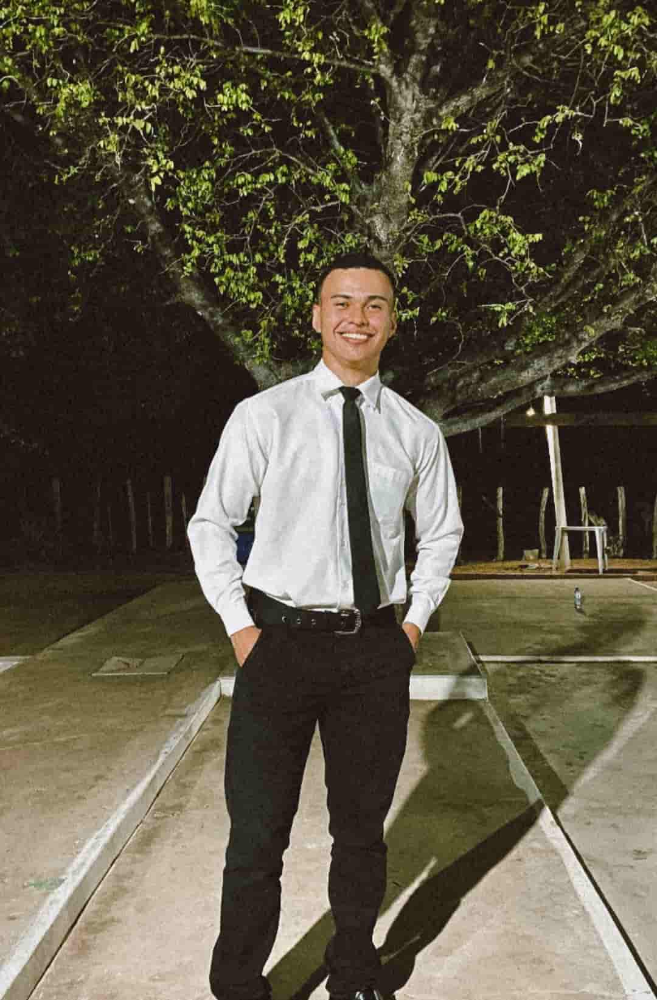

Teresina · PIEmanuel Cândido
Engenharia de Software
- Foco
- Backend & APIs REST
- Formação
- Engenharia de Software (UNIFSA)
Aberto a oportunidades
Desenvolvo APIs, sistemas web e soluções digitais com foco em arquitetura, segurança, performance e experiência de uso profissional.

Teresina · PIEngenharia de Software
Tecnologias: Java, Spring Boot, PostgreSQL, JPA, APIs REST, JWT, JavaScript, TypeScript, React, Python, Firebase, Android, HTML, CSS, Git e GitHub.
Especialidades
Soluções digitais pensadas para serem organizadas, seguras, fáceis de manter e preparadas para crescer.
Criação de APIs REST, autenticação, validações, regras de acesso e organização em camadas.
Modelagem de tabelas, relacionamentos, consultas SQL e estruturação de dados para sistemas reais.
Interfaces modernas, responsivas e objetivas, com foco em clareza, usabilidade e experiência visual.
Organização de projetos, uso de GitHub, branches, commits e manutenção de repositórios.
Projetos
Projetos reais — sistemas, sites, jogos e aplicativos — pensados do layout ao código, com foco em quem vai usar.
Plataforma educacional que usa IA generativa para ajudar professores da saúde a criar, revisar e organizar casos clínicos, com perguntas avaliativas e exportação em PDF. Desenvolvida no projeto de iniciação científica (PIBIC) e apresentada em congressos.
Sistema para facilitar o agendamento de serviços da barbearia: o cliente escolhe serviço, profissional e horário pelo celular, e o dono gerencia tudo em um painel administrativo.
Página de links para o Instagram de um personal trainer, com os serviços em destaque, tema claro e escuro e contato direto pelo WhatsApp com a mensagem pronta para cada serviço.
Jogo desenvolvido para ensinar sustentabilidade de forma interativa, incentivando crianças a tomar decisões e compreender o impacto de suas escolhas no ambiente.
Aplicativo de notas para Windows que abre com um atalho de qualquer lugar, salva tudo automaticamente e guarda os dados no próprio computador, sem conta e sem nuvem.
Produção acadêmica
Pesquisa, apresentações e formação complementar. Três desses trabalhos nasceram do ClinicCase, plataforma de casos clínicos com IA.
5º Congresso Internacional de Estudantes e Profissionais da Saúde · Centro de Convenções do Hotel SESC Praia
Apresentação do trabalho “Plataforma Inteligente para Geração de Casos Clínicos com Inteligência Artificial: Uma Proposta para o Ensino em Saúde”.
5ª edição · IFPI Campus Pedro II
Na quinta edição do Opala Tech, o IFPI Pedro II se tornou o epicentro da inovação, unindo teoria e prática em um só lugar. Apresentação do trabalho “Arquitetura de uma Plataforma Inteligente Baseada em LLM e RAG para Geração e Avaliação de Casos Clínicos no Ensino em Saúde”, que propõe uma arquitetura em camadas com API orquestradora em Spring Boot, gateway para múltiplas LLMs, RAG com banco vetorial e feedback formativo para os alunos.
Programa de Iniciação Científica · Centro Universitário Santo Agostinho (UNIFSA)
Artigo “Plataforma Inteligente para Geração de Casos Clínicos com Inteligência Artificial: Uma Proposta para o Ensino em Saúde”, que apresenta o MVP do ClinicCase: um sistema web com IA generativa para configurar, gerar, editar e exportar casos clínicos e perguntas avaliativas. O levantamento com docentes apontou a falta de tempo (85,7%) e conteúdos genéricos de ferramentas de IA como principais dificuldades; na plataforma, um caso completo é gerado em cerca de 15 a 25 segundos e continua editável, mantendo o professor no controle da versão final.
Controle de versão e colaboração para o futuro da programação · Centro Universitário Santo Agostinho
Extensão sobre Git e GitHub, ferramentas indispensáveis e amplamente utilizadas por empresas e comunidades de desenvolvedores em projetos de todos os portes.
Sobre mim
Sou estudante de Engenharia de Software no Centro Universitário Santo Agostinho (UNIFSA) e desenvolvedor em formação, dedicado a transformar necessidades reais em aplicações confiáveis, organizadas e fáceis de evoluir.
Minha atuação está concentrada em backend com Java e Spring Boot, APIs REST, banco de dados, autenticação, regras de negócio e integração com interfaces modernas.
Este portfólio reúne projetos que demonstram minha evolução técnica, atenção à experiência do usuário e compromisso com código limpo, documentação objetiva e soluções com propósito.
Controllers, serviços e repositórios com responsabilidades claras.
Relacionamentos, consultas e integridade pensados desde o início.
Clareza, usabilidade e responsividade em cada tela.
Contato
Estou aberto a projetos, oportunidades, parcerias e conversas sobre desenvolvimento. Prefiro uma comunicação direta, simples e objetiva.